Сурцов Владимир Владимирович
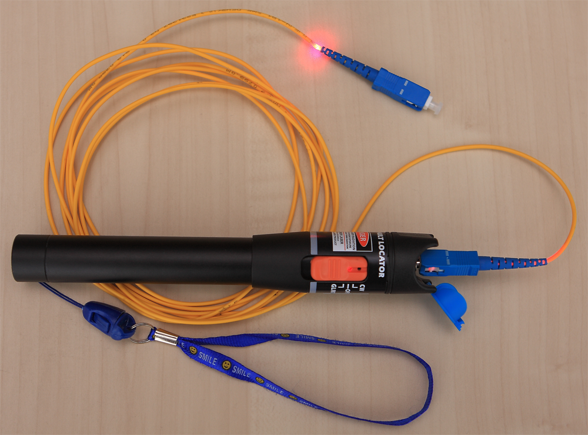
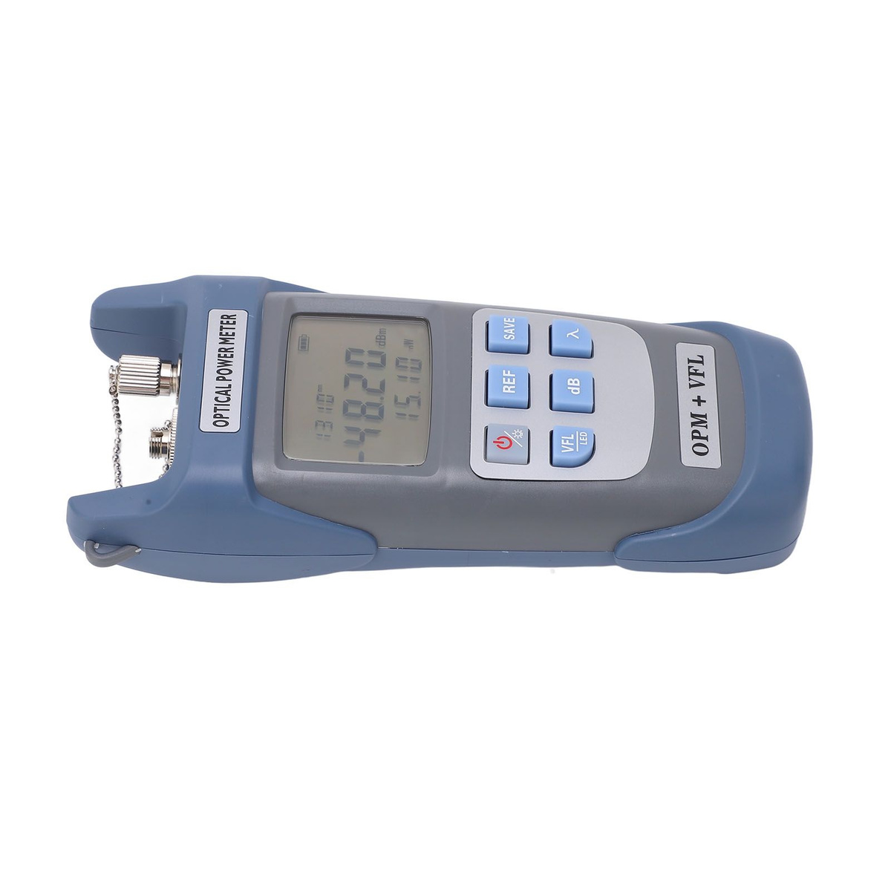
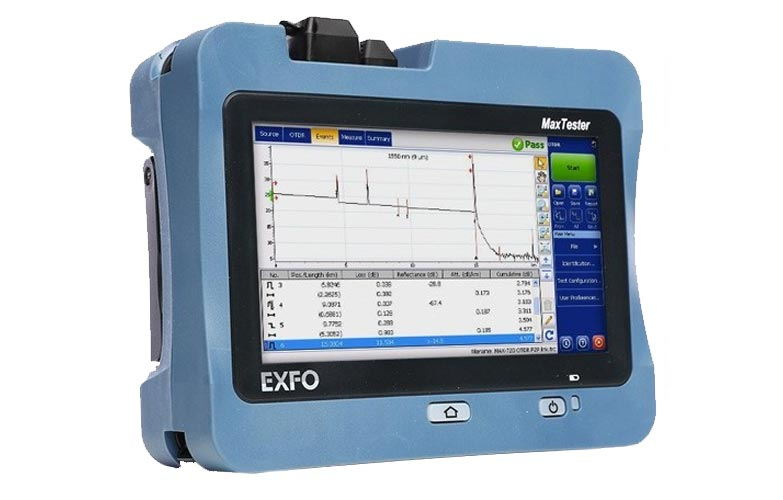
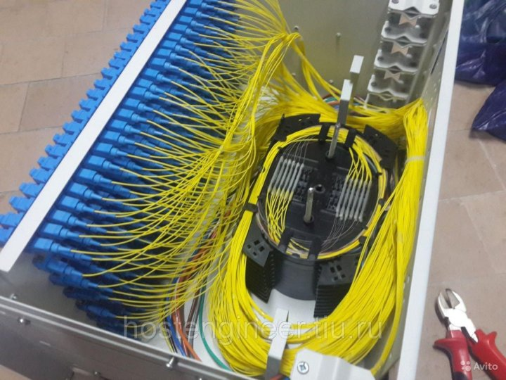
Пассивное оборудование не нуждается в источниках питания. Передача данных осуществляется без дополнительных преобразований сигнала. Пакеты информации пересылаются без каких-либо изменений.
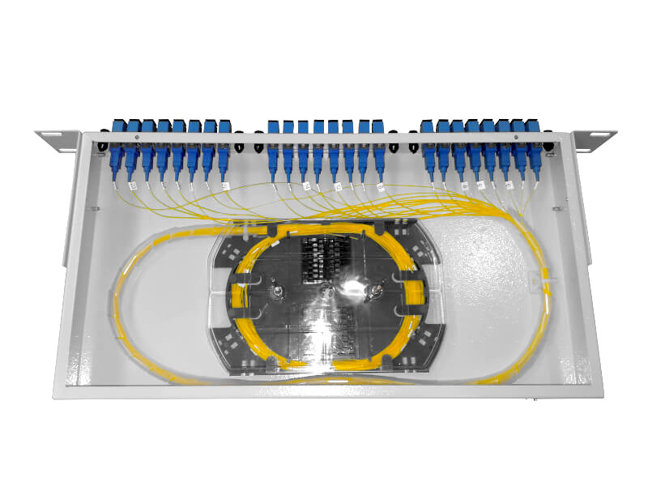
Оптический кабель вводится в кросс через отверстие в корпусе. Для предотвращения перемещения линейный кабель закрепляется кабельным держателем, силовой элемент кабеля дополнительно закрепляется. Перемещение кабеля в кроссе может повлечь повреждение внутренних соединений оптических волокон. Ввод может быть защищен простой прорезиненной заглушкой, гибким или герметичным кабельным вводом. Для закрепления оптических волокон в кроссе используются сплайс-кассеты. Сплайс кассета имеет пазы для термоусадочных трубок, которыми защищаются места сварки волокон пигтейла и линейного оптического кабеля. Внутри сплайс-кассеты могут располагаться излишки оптических волокон. Сплайс-кассета закрывается собственной крышкой и закрепляется внутри кросса на специальных шпильках.
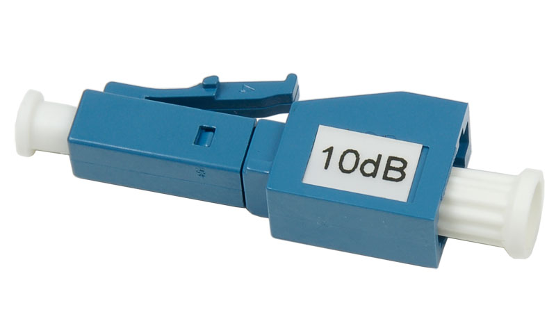
Оптический аттенюатор — это пассивное устройство, предназначенное для управляемого снижения мощности (амплитуды) оптического сигнала без существенного искажения его формы. Бывают как перестраиваемые, так и с фиксированным затуханием. Также различаются по спомобу установки: разъем/разъем и ввариваемые в волокно.
Оптический делитель/сплиттер/разветвитель — неселективный пассивный элемент (N-полюсник), имеющий минимально три полюса/порта и распределяющий входящую оптическую мощность между выходными портами в определенном соотношении, без какого-либо усиления или переключения.
В настоящее время существует две наиболее распространенные технологии изготовления оптических разветвителей — Fused Biconical Taper (FBT) и Planar Lightwave Circuit (PLC).
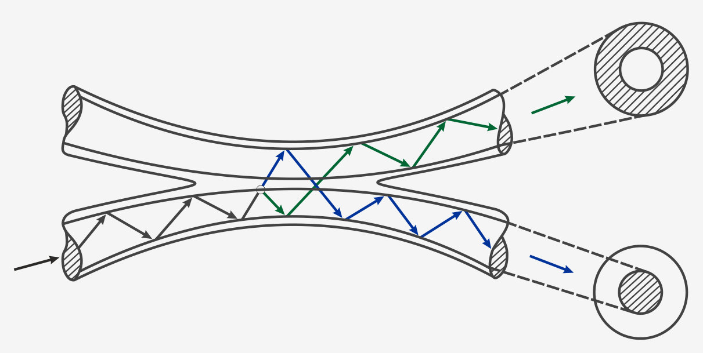
Оптические делители, созданные по технологии FBT, называют биконическими или сварными (Fused coupler). Название «сварные» делители получили по технологии производства, а «биконические» по принципу работы. Технология производства относительно проста — два волокна с удаленными внешними оболочками (лак, пластиковый буфер) сплавляют в четырехполюсник с двумя входами и двумя выходами (2:2).
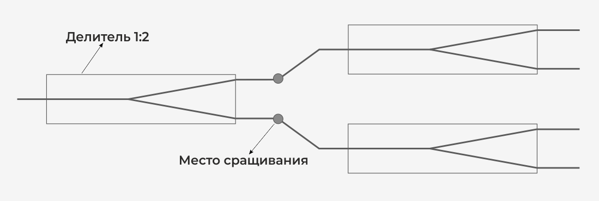
В случае, когда требуется сварной делитель с количеством выводов более двух, например, четыре — предварительно изготавливают три делителя 1:2 с требуемыми характеристиками, а уже после происходит процесс их сращивания, как показано на рисунке 3. Аналогичным образом можно создать делитель 1:64.
Планарный оптический делитель, пассивное устройство, предназначенное для равномерного разделения входного оптического сигнала на несколько выходных портов. Работа PLC-делителя основана на физике распространения света в специальных волноводных структурах. Когда световой сигнал попадает на вход устройства, он не «разрезается», а именно делится. Его мощность распределяется между выходными портами. В основе конструкции лежит Y-образная структура волновода. При достижении области разветвления мода света плавно (адиабатически) перераспределяется между двумя ответвлениями без резких переходов и потерь. Это позволяет равномерно разделить оптическую мощность между двумя выходными волокнами.
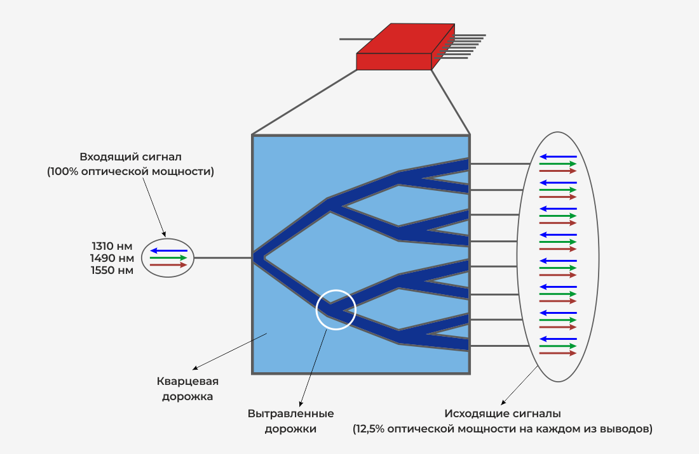
PLC-делитель изготавливается на кварцевой или кремниевой подложке с использованием методов фотолитографии и травления.
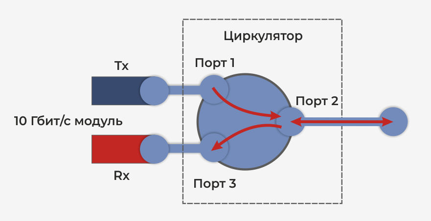
Оптический циркулятор – прибор, предназначенный для разделения встречных световых потоков за счет поляризации и распределения их по соответствующим выходам. Устройство используют для уплотнения оптических линий связи. Передача двух сигналов в разных направлениях происходит на одной длине волны.
При использовании ОЦ в целях уплотнения используются два оптических циркулятора — по одному на каждую сторону оптической линии. Данные оптические циркуляторы должны осуществлять уплотнение оптического сигнала по длине волны, совпадающей с длиной волны, на которой работают трансиверы (осуществляется прием и передача).
Оптические компоненты, которые разделяют или объединяют оптические сигналы в зависимости от длины волны излучения. Они являются основой систем спектрального уплотнения (CWDM, DWDM) и дуплексной связи по одному волокну.
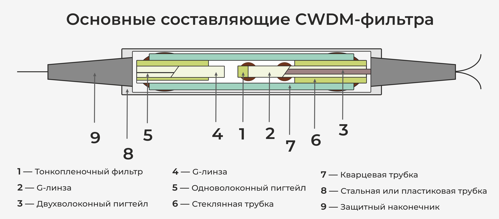
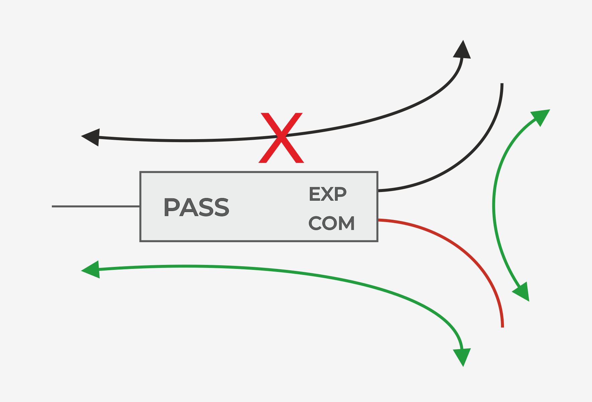
Оптический сигнал с длиной волны (или диапазоном), может передаваться между портами фильтра Pass и Com. Величина вносимого затухания между данными портами составляет от 0,3 дБ до 0,8 дБ. Оптические сигналы с другими длинами волн передаются между портами Express и Com. Вносимое затухание оптического сигнала между этими портами составляет также от 0,3 дБ до 0,8 дБ.
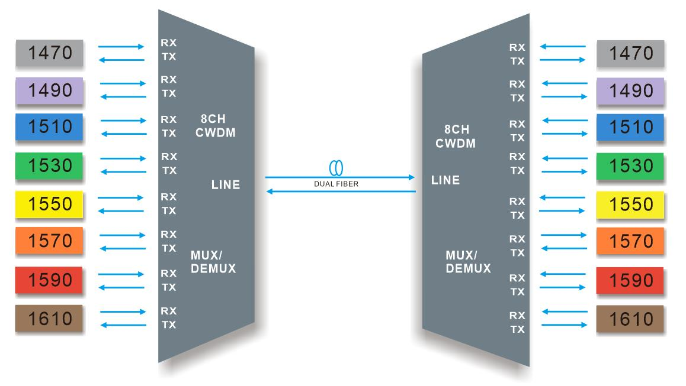
Мультиплексоры (MUX) и демультиплексоры (DEMUX), ключевые устройства для увеличения пропускной способности линии за счёт спектрального уплотнения каналов. Они работают в паре: мультиплексор объединяет несколько сигналов на разных длинах волн в один общий поток для передачи по волокну, а демультиплексор на приёмной стороне разделяет этот поток обратно на исходные сигналы.
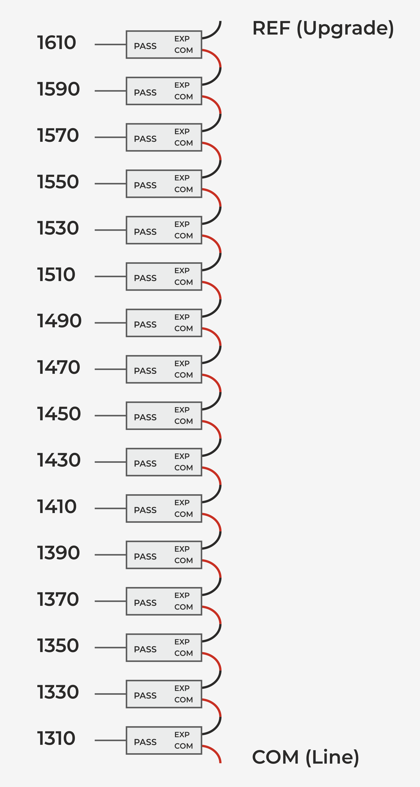
Фильтры, каждый из которых работает на свей длине волны, соединяются друг с другом таким образом, что порт Com предыдущего совпадает с портом Exp последующего. Порт Exp первого фильтра в цепи, маркируется как Upgrade, порт Com последнего часто маркируется как Line, он включается в линию.
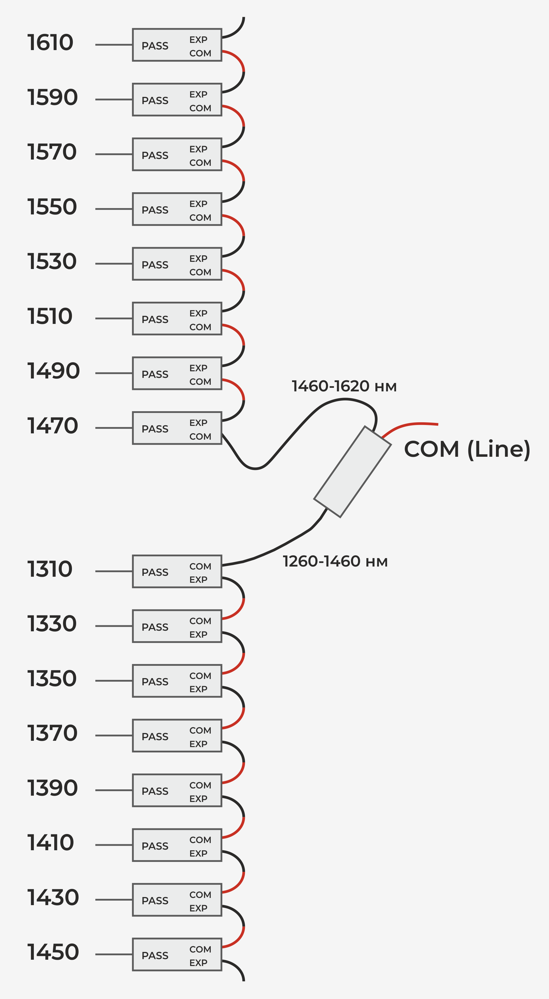
Для уменьшения вносимых затуханий допускается использование в конструкции мультиплексора полосового фильтра. Такую конструкцию можно разделить на два отдельных устройства, собранных по последовательной схеме. Порты Com обоих устройств соединяются с соответствующими портами полосового тонкопленочного фильтра. Вносимое затухание в данном случае меньше почти на 3 дБ (7.5км для 1310нм и 15км для 1550нм).
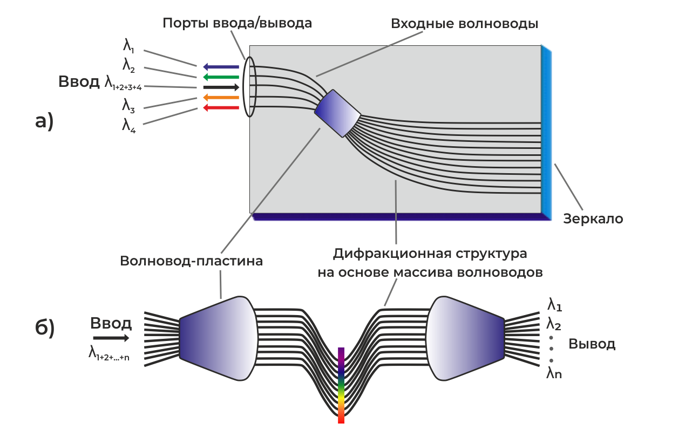
Приходящий мультиплексный сигнал попадает на входной порт. Затем этот сигнал проходит через волновод-пластину и распределяется по множеству волноводов, представляющих дифракционную структуру AWG (Arrayed Waveguide Grating). Далее происходит отражение от зеркальной поверхности и световые потоки вновь собираются в волноводе-пластине, где происходит их фокусировка и интерференция — образуются пространственно разнесенные интерференционные максимумы интенсивности, соответствующие разным каналам (длинам волн). Геометрия волновода-пластины и длины волноводов структуры AWG, рассчитываются таким образом, чтобы интерференционные максимумы совпадали с выходными полюсами. Мультиплексирование происходит обратным путем.
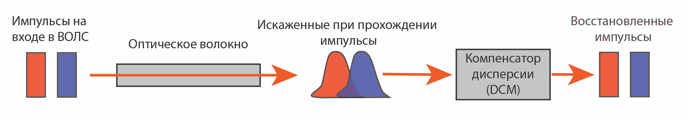
Предназначенное для исправления формы оптических сигналов, искаженных под влиянием хроматической дисперсии воптическом волокне. Бывают на основе волоконной решетки Брэгга DCM FBG (Dispersion Compensation Module Fiber Bragg Grating) или на основе оптического волокна с отрицательным значением хроматической дисперсии DCF (Dispersion Compensation Fiber). Оба варианта являются компонентами с отрицательным значением хроматической дисперсии в диапазоне длин волн 1525-1600 нм.
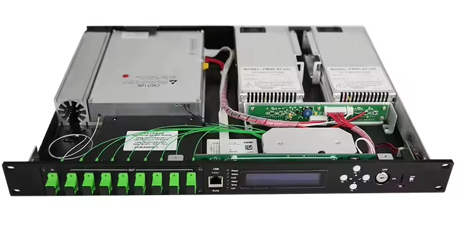
Активное оборудование нуждается в источниках питания. Передача данных осуществляется с дополнительных преобразований сигнала. Такое оборудование по мимо приёма и передачи еще может изменять направление и мощность сигнала.
Медиаконвертер (преобразователь среды) — это активное сетевое устройство, которое преобразует электрический сигнал в оптический и обратно. Его главная задача — соединить сегмент сети на медной витой паре с сегментом на оптоволокне. Медиаконвертер работает на 1-м (физическом) уровне модели OSI.2 источника Он не анализирует данные внутри пакетов (MAC-адреса или IP), а просто пересылает «единицы» и «нули» из одной физической среды в другую.
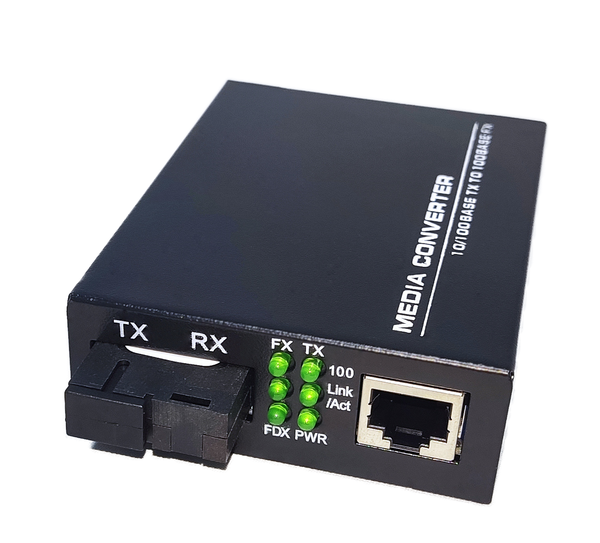
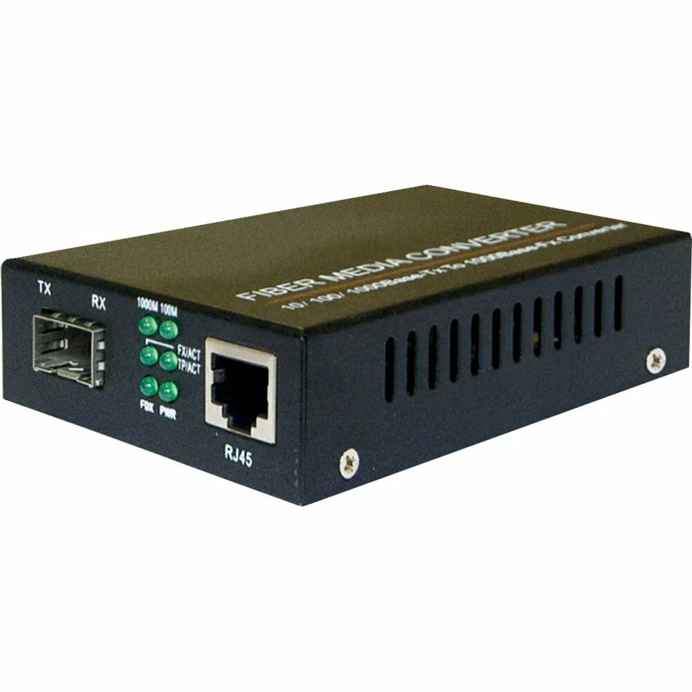
Устройства могут классифицироваться по различным параметрам:
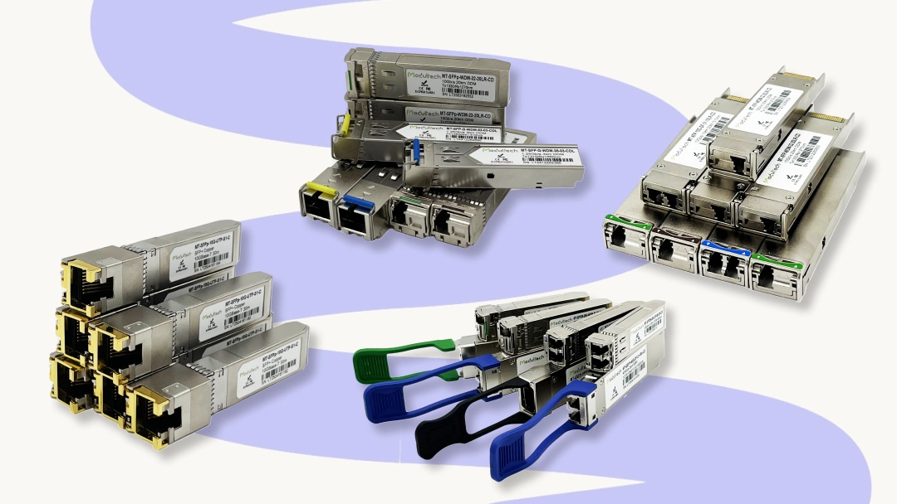
Оптический трансивер (от англ. TRANSmitter – передатчик и reCEIVER – приeмник) или компактный сменный оптический модуль – это приeмо-передающее устройство, которое используется в волоконно-оптических линиях связи для обмена данными между сетевым оборудованием: коммутаторами, маршрутизаторами, мультиплексорами и другим телекоммуникационным оборудованием. При передаче данных трансиверы выполняют электрооптическое преобразование сигнала, а при приеме – оптоэлектронное.
Основные характеристики:
| Форм-фактор | Полное название | Характерные скорости (на один канал) | Суммарная скорость (агрегатная) |
|---|---|---|---|
| SFP | Small Form-factor Pluggable | 100 Мбит/с, 1.25 Гбит/с | До 4.25 Гбит/с |
| SFP+ | Enhanced Small Form-factor Pluggable | 16 Гбит/с (FC), 10 Гбит/с | До 10 Гбит/с |
| SFP28 | Small Form-factor 28 | 32Гбит/с (FC) 25 Гбит/с | До 25 Гбит/с |
| QSFP+ | Quad Small Form-factor Pluggable Plus | По 10 Гбит/с на каждый из 4 каналов | 40 Гбит/с |
| QSFP28 | Quad Small Form-factor Pluggable 28 | По 25 Гбит/с на каждый из 4 каналов | 100 Гбит/с |
| QSFP-DD | Quad Small Form-factor Pluggable Double Density | По 50–112 Гбит/с на канал | 200 / 400 / 800 Гбит/с |
| OSFP | Octal Small Form-factor Pluggable | Аналогично QSFP-DD (8 каналов) | 400 / 800 Гбит/с |
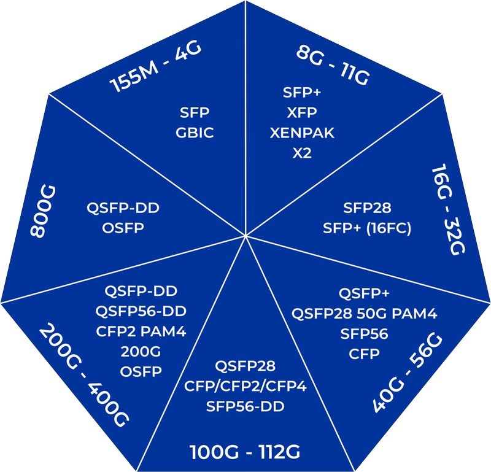
Оптический бюджет мощности (Optical Power Budget) - это разность между мощностью передатчика и минимальной чувствительностью приёмника, выраженная в децибелах (дБ):
Суммарные потери в линии, выраженные в децибелах (дБм):
Все оптические трансиверы можно условно разделить на три вида:
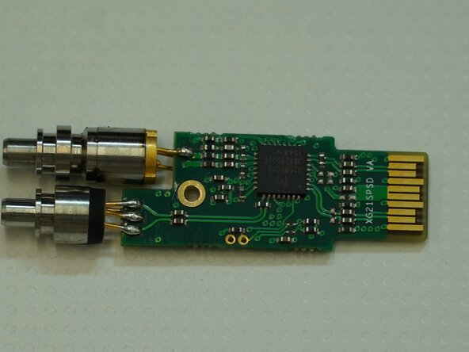
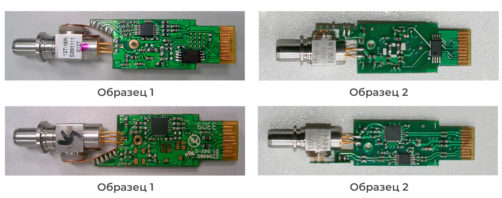
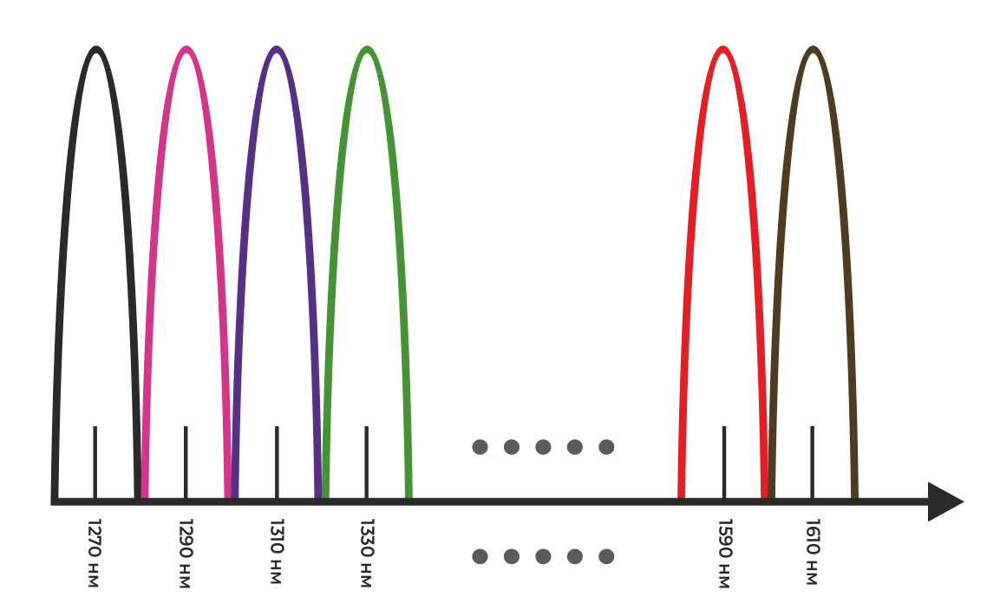
«Неплотное» мультиплексирование с разделением по длине волны («разреженное» спектральное уплотнение) — CWDM (Coarse Wavelength Division Multiplexing).
Оптические каналы лежат в диапазоне от 1270 до 1610 нм c шагом 20нм, число возможных каналов передачи – до 18. При выборе количества каналов следует обратить внимание на тип используемого одномодового волокна. Например, в волокнах типа G.652B (волокно с водяным пиком на длине волны 1383 нм) на коротких длинах волн большие потери на излучение, в связи с этим допустимое расстояние передачи сокращается и количество спектральных каналов будет меньше требуемого.
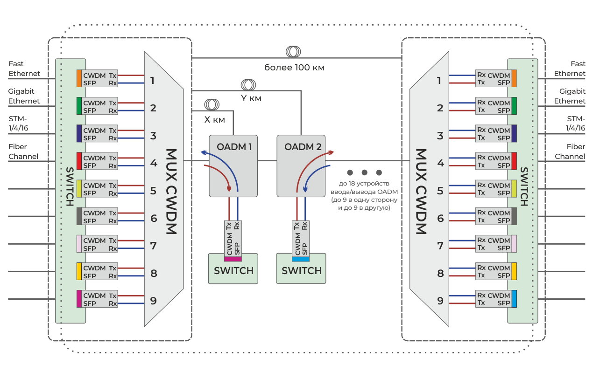
Основные элементы систем спектрального уплотнения:
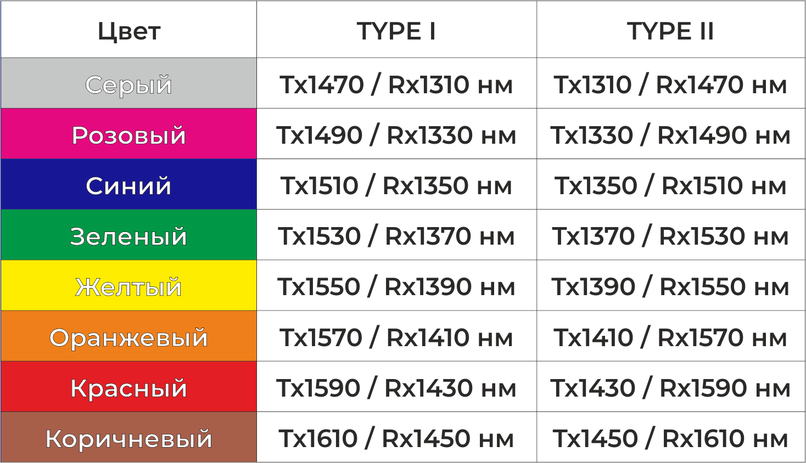
Плотное спектральное уплотнение DWDM (Dense Wavelength-Division Multiplexing)
DWDM – 40 длин волн или 20 дуплексных каналов для сетки частот 100 ГГЦ, 1528–1565 нм с шагом 0,8 нм / 96 длин волн или 48 дуплексных каналов для сетки частот 50 ГГЦ, 1527–1567 нм с шагом 0,4 нм
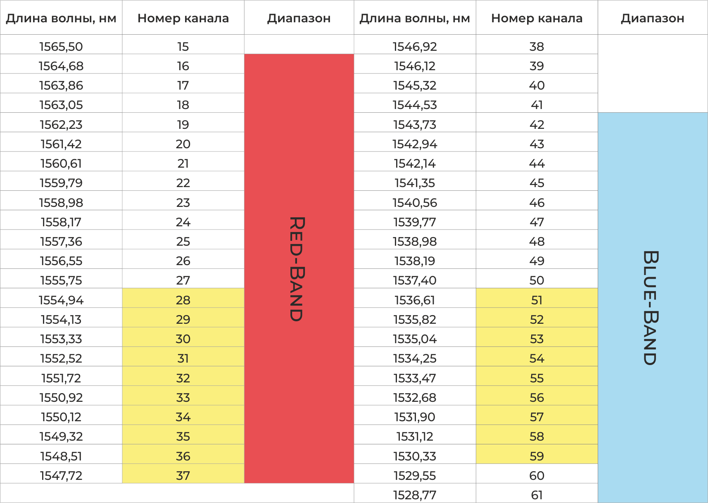
Основные элементы систем спектрального уплотнения:
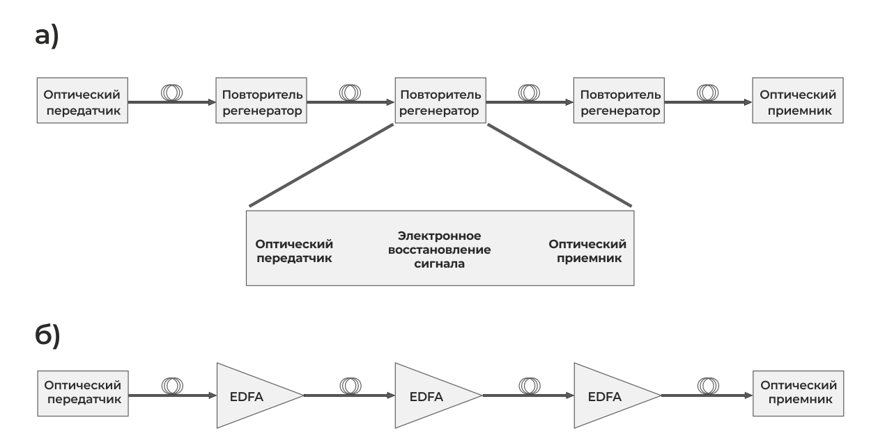
Усилители EDFA (Erbium-Doped Fiber Amplifier: оптический усилитель, легированный эрбием). Длины волн, усиливаемых простыми EDFA оптических сигналов, лежат в диапазоне от 1525 до 1565 нм, что идеально подходит для усиления мощности излучения в «С-диапазоне» DWDM-систем. Для усиления сигналов из «L-диапазона» используются LWEDFA (Long Wavelength EDFA: длинноволновые EDFA), работающие в диапазоне от 1570 до 1605 нм.
Основные характеристики усилителей EDFA:
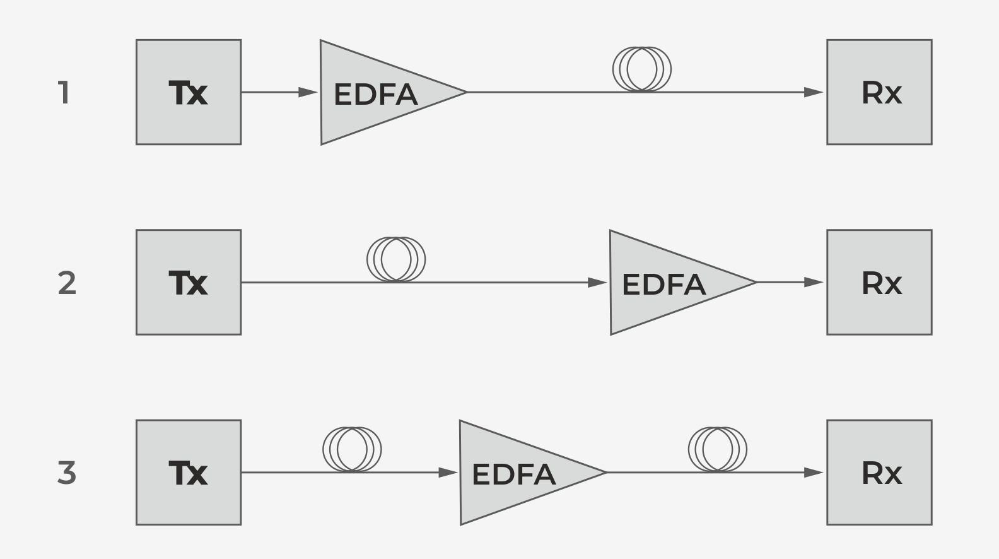
Optical Line Protection сокращенно OLP (в переводе с англ. оборудование защиты оптической линии) – это активное устройство физического резервирования оптической линии передачи. Устройство осуществляет электро-механическое переключение пути передачи оптических сигналов, без преобразования их в электрическую форму, а так же осуществляет мониторинг уровня мощности поступающих сигналов в реальном времени. Переключение может осуществляться оператором сети вручную, либо автоматически, при достижении входящих оптических мощностей установленных пороговых значений.
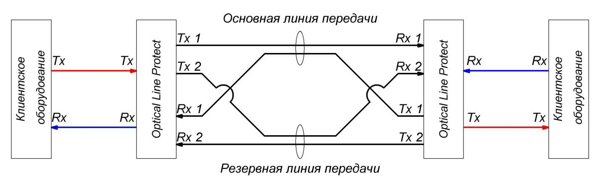
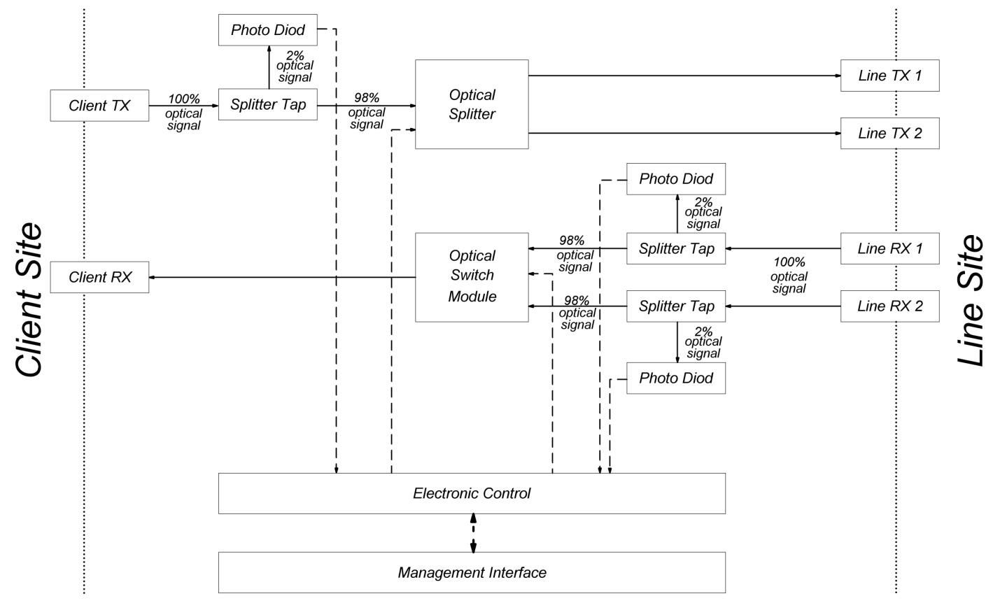
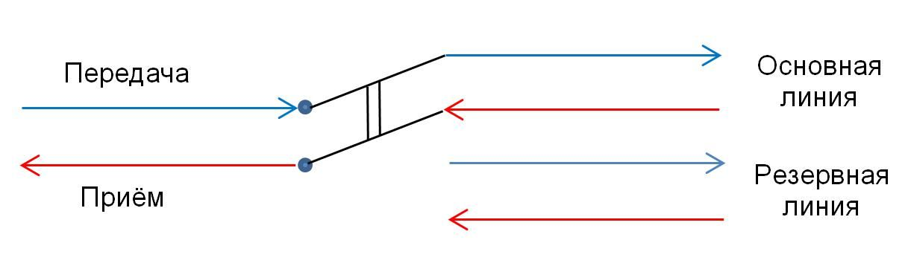